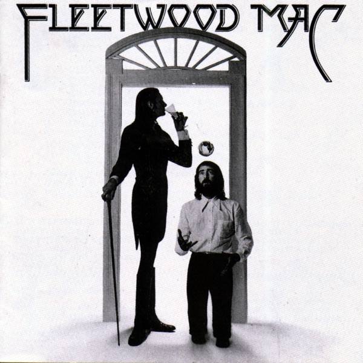
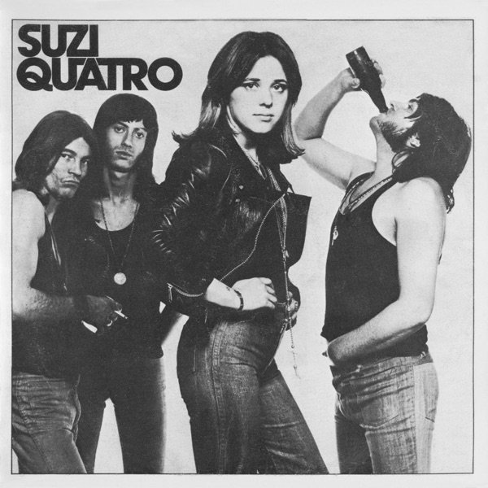
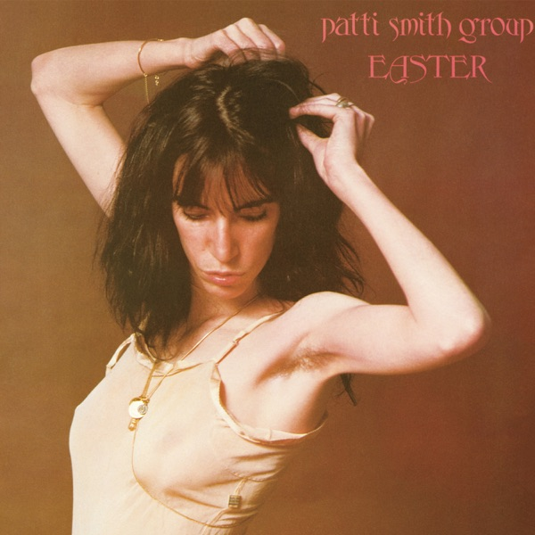
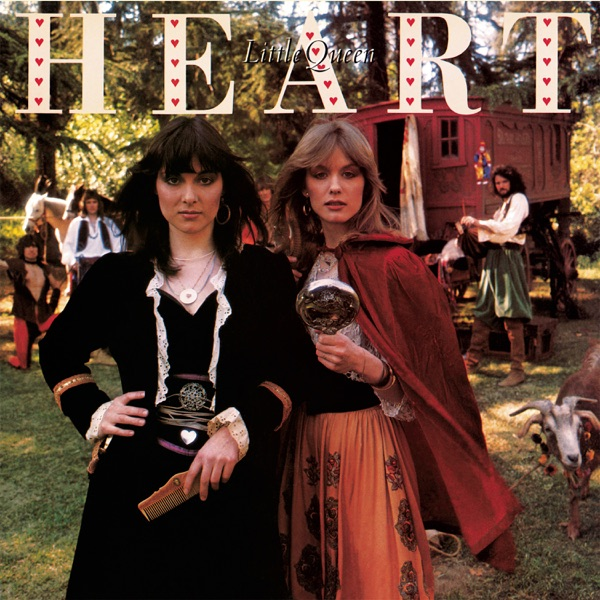
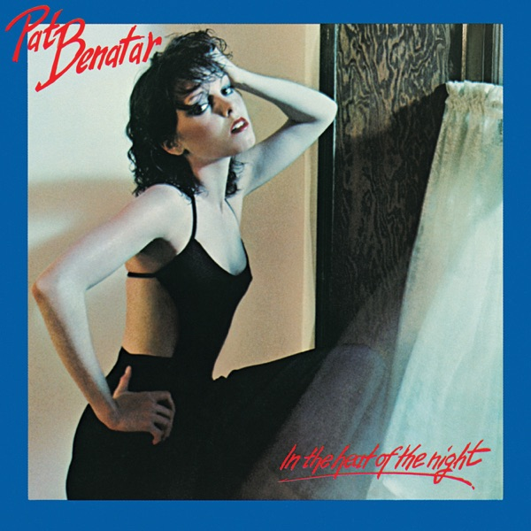
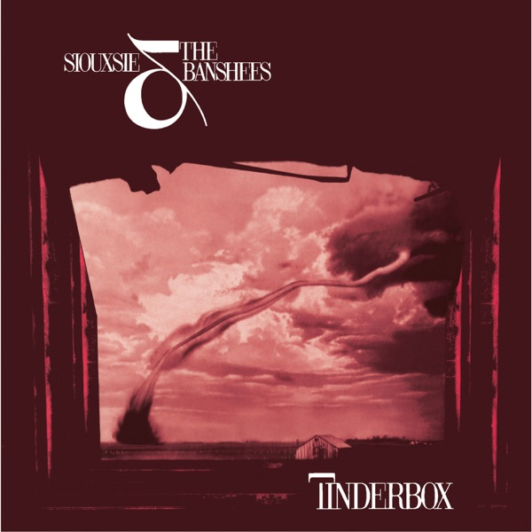
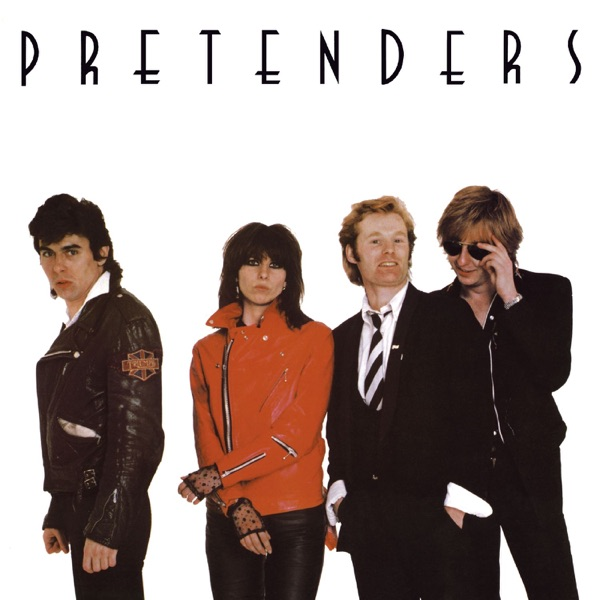
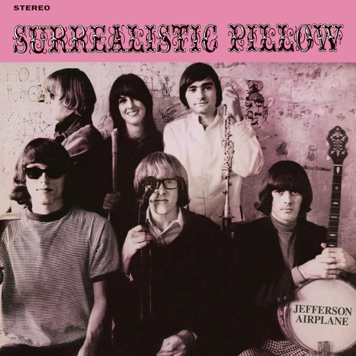

GROOVE · 록 3부작 · 개막
Ⅰ. Arise - 60's to 80's
록은 한 번도 남성의 전유물이었던 적이 없다. 1부는 그 사실을 무대 위에서 처음 증명한 목소리들 — 그리고 저항이 록의 장식이 아니라 본질임을 보여준 개막의 기록이다.












록 3부작 제1부 — 1960s–80s · 12곡 · 글 비바체
Big Brother & The Holding Company & Janis Joplin
원곡은 에르마 프랭클린의 소울 넘버지만, 재니스 조플린이 빅 브라더 앤 더 홀딩 컴퍼니와 부른 이 버전이 역사가 됐다. 목이 찢어지는데 그게 기교다 — 텍사스 촌뜨기 취급을 받던 사람이 샌프란시스코 사이키델리아의 한복판에서 심장을 조각내며 불렀다. 발매 이듬해 우드스톡, 2년 뒤 스물일곱의 죽음. 이 4분 안에 그 모든 게 이미 들어 있다.
Blondie
CBGB*에서 출발한 펑크 밴드가 디스코 비트를 가져다 붙이자 순수주의자들은 배신이라 했고, 차트는 미국 1위로 답했다. 데비 해리는 차갑게, 거의 무표정하게 부르는데 곡은 미러볼처럼 반짝인다 — 그 온도차가 이 곡의 전부다. 장르의 경계를 겁내지 않는 태도야말로 펑크라는 걸 블론디가 증명했다.
* CBGB — 1973년 뉴욕 바워리에 문을 연 클럽. 펑크와 뉴웨이브의 산실.
Joan Jett & The Blackhearts
원곡은 영국 밴드 애로우스가 불렀지만 이 곡의 주인은 조안 제트다. 러너웨이즈 해체 후 메이저 레이블 스물세 곳에서 거절당하자 직접 레이블을 차렸고, 이 곡으로 빌보드 1위를 7주간 지켰다. 선언처럼 부르는 후렴 — 록은 내 것이라는. 주크박스에 동전을 넣는 가사가 이렇게 정치적으로 들리는 곡은 없다.
The Runaways
조안 제트, 셰리 커리, 리타 포드 — 전원 10대로 결성된 러너웨이즈의 데뷔 싱글. 오디션장에서 셰리 커리를 위해 즉석에서 만들어졌다는 일화가 있다. 업계는 이들을 노벨티로 소비하려 했지만 폭탄은 이미 던져졌다. 여기서 갈라진 계보가 조안 제트와 리타 포드로 이어져 80년대를 관통한다 — 개막의 마지막 곡으로 이만한 게 없다.
Listen
들으러 가기
▶ 플레이리스트 재생 — Spotify03Big Brother & The Holding Company & Janis Joplin — Piece of My Heart196805Blondie — Heart of Glass197807Joan Jett & The Blackhearts — I Love Rock 'N Roll198112The Runaways — Cherry Bomb1976